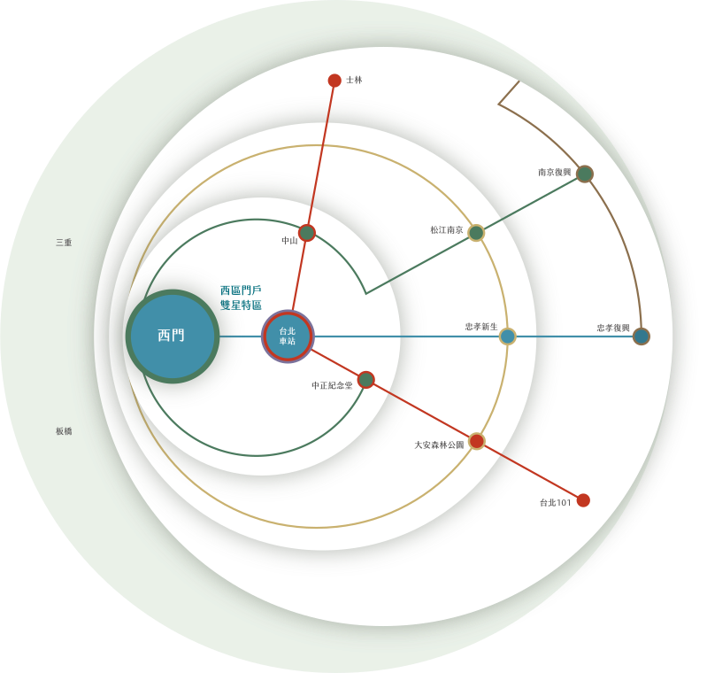
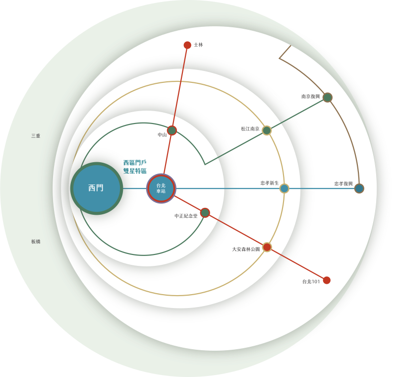

西門雙星
靜巷藝邸
35-50坪 2389-1888


揭序百年西區
世界之窗中的富隱名邸
西區大未來
世界都在看
台北雙星千億開發
掀動西門增值潮
西區門戶計畫獨領上千億投資開發，打造台北國門大站「台北雙星」，遠超台北101近1.6倍的樓地板面積，六鐵共構車站、頂規商辦、國際百貨與高奢飯店齊發，定奪台灣下一次經濟奇蹟，為【瓏山林玥河】地段力全面鍍金。

 

雙星第一環
笑納未來台北雙星 價值優先承接權
板南×松山線交會「西門站」每日近8.4萬人潮進出站，長期穩居北捷前2大站，與台北車站共築北市最龐大交通樞紐！【瓏山林玥河】近鄰西門站，直達南軟與信義區，5站內集聚中山、忠孝新生、東區、三重站，稱霸軌道經濟學！
捷運西門站
雙金軸核心
1站台北雙星，北捷人潮第2大站
板南×松山線交會「西門站」每日近8.4萬人潮進出站，長期穩居北捷前2大站，與台北車站共築北市最龐大交通樞紐！【瓏山林玥河】近鄰西門站，直達南軟與信義區，5站內集聚中山、忠孝新生、東區、三重站，稱霸軌道經濟學！
速捷三動脈
決勝交通力
市民大道╳環河南北路╳中興大橋
【瓏山林玥河】向北直通「市民大道」，愜意橫跨北市東西向七大區；向西接軌「環河南北路」，中山高環北交流道、大稻埕河濱公園、西門町、板橋全線奔赴；「中興橋」來往三重開車往來便利，雙北來去自如。

經典的深蘊 西門心況味
縱享西門町潮流 靜邀老西區人文
出門漫步在城西街道煙火氣息中，總能偶遇米其林多次欽點的在地美饌品牌；轉身即是武昌街、成都路的全球電影重鎮，西門町商圈新潮品味遊覽不盡。流行尖端交匯百年文化，住在西區正核心，繼續精彩一世紀。


新古典名宅 繁心一巷靜
西門特區靜巷名邸 雍雅大器落成
最有底蘊的老西區，最有未來的新座標，【瓏山林玥河】藏城市繁華於靜，享隱巷慢活哲學，目光高層相望河岸，地標層峰奢侈寧靜。在輝映台北雙星首席的西區，難得頂級規格的靜巷大戶名宅，才是真傳世價值。
縱橫半世紀 巨擘級品牌
瓏山林營建 47年口碑叱吒全台
近50年的品牌底蘊，瓏山林營建以敏銳的選地眼界，一路鎖定台北精華土地，完美要求建築品質，構築生活最美好的樣貌。品牌版圖更跨足金融、飯店、媒體等巨擘，賦予【瓏山林玥河】如山般穩重厚實的藝術建築風景。
經典名作｜
瓏山林博物館、瓏山林世貿博物館、瓏山林榮馥大院、瓏山林台北中和飯店、瓏山林蘇澳冷熱泉度假飯店
基本資料
| 瓏山林企業股份有限公司
| 瓏山林營建股份有限公司
| 109建字第0242號
| 113使字第0186號
|約467坪
| 地上13層、地下3層
|35-50坪
| 台北市萬華區西昌街29巷8號
|
 海心國際股份有限公司
海心國際股份有限公司
| 台北市萬華區西昌街29巷2號 02-2389-1888